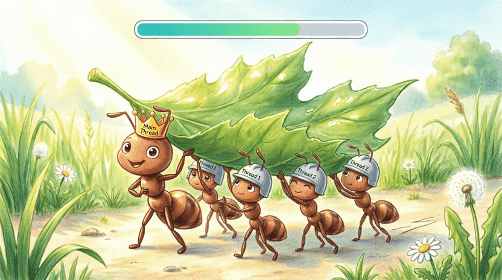
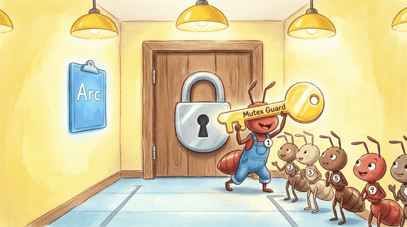
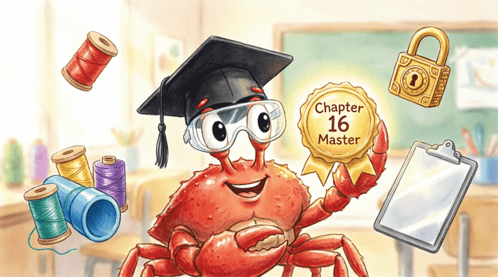

Land of Rust: Ferris the Space Crab’s Adventures
Chapter 16: Swarms of Ants (Concurrency)
📑 Chapter Index
16.1. How a Legion of Ants Moves a Giant Leaf (Threads)
16.1.1. Story: Ants and the Giant Leaf
16.1.2. What is a Thread?
16.1.3. Creating a Thread with thread::spawn
16.1.4. Waiting with join
16.1.5. Exercise: Two Simultaneous Threads
16.2. Sending Data Between Threads
16.2.1. Transferring Ownership with move
16.2.2. Channel (mpsc) for Sending Messages
16.2.3. Sending Multiple Messages
16.2.4. Non‑blocking Receive with try_recv
16.2.5. Exercise: Producer and Consumer
16.3. The Narrow Hallway (Mutex)
16.3.1. Story: The One‑Way Hallway
16.3.2. What is Mutex<T>?
16.3.3. Locking and Access
16.3.4. Sharing Between Threads with Arc
16.3.5. Exercise: Shared Counter
16.4. Project: Concurrent Counter with Threads
16.4.1. Without a Mutex: Data Race
16.4.2. With a Mutex: The Correct Solution
16.4.3. Run and Observe the Result
16.5. Summary and Challenge
16.5.1. Concept Review
16.5.2. Challenge: Producer‑Consumer with a Queue
16.1. How a Legion of Ants Moves a Giant Leaf (Threads)
16.1.1. Story: Ants and the Giant Leaf
Have you ever noticed that a single ant cannot move a giant leaf? 🍃 But when thousands of ants cooperate, the leaf glides like a light boat on their backs. Each ant grabs a corner and pulls together with the others.
In the computer world, those hard‑working ants are called Threads. Using threads we can do several things at the same time and make our programs faster and more powerful.
Learning concurrency means you can use the real power of multi‑core computers – a huge step toward becoming a computer wizard! 🧙♂️
16.1.2. What is a Thread?
A thread is like a small worker inside your program. Your main program (the main function) is itself a thread (we call it the main thread). You can tell the main thread: “Go hire some new workers and split the work among them!” All these workers can work simultaneously.
In Rust, the std::thread module provides all the tools we need. 🛠️
16.1.3. Creating a Thread with thread::spawn
To create a new thread we use thread::spawn. It takes a Closure (the magic backpack from Chapter 13) and runs it in a separate thread:
use std::thread;
use std::time::Duration;
fn main() {
// hire a new worker
thread::spawn(|| {
for i in 1..10 {
println!("🐜 Ant number {} is working", i);
thread::sleep(Duration::from_millis(100)); // a short rest
}
});
// the main thread works as well
for i in 1..5 {
println!("👑 Main thread: {}", i);
thread::sleep(Duration::from_millis(50));
}
}thread::sleep makes the thread sleep for a few milliseconds so you can see how they run concurrently.
16.1.4. Waiting with join
If the main thread finishes its work too early, the program might exit and leave the other threads unfinished! To prevent that we use join. join means: “Wait until this thread finishes its work, then move to the next step.”
#![allow(unused)]
fn main() {
let handle = thread::spawn(|| {
println!("New thread started working...");
// long‑running work
});
handle.join().unwrap(); // wait here for the thread to finish
println!("All work done!");
}16.1.5. Exercise: Two Simultaneous Threads
Create two separate threads, each printing numbers 1 to 5 at different speeds. Use join for both so that the main thread waits for them.
💡 Sample answer:
use std::thread;
use std::time::Duration;
fn main() {
let h1 = thread::spawn(|| {
for i in 1..=5 {
println!("🐜 Ant 1: {}", i);
thread::sleep(Duration::from_millis(80));
}
});
let h2 = thread::spawn(|| {
for i in 1..=5 {
println!("🐜 Ant 2: {}", i);
thread::sleep(Duration::from_millis(50));
}
});
h1.join().unwrap();
h2.join().unwrap();
println!("✅ All ants finished their work!");
}
👨👩👧 Note for parents and teachers
Concurrency is one of the most advanced topics in programming. This chapter only introduces the basic concepts. If the child struggles withArcorMutex, don’t worry – these tools are used in professional projects and mastering them takes time. The official Rust book has a full chapter on concurrency:
doc.rust-lang.org/book/ch16-00-concurrency.html
16.2. Sending Data Between Threads
16.2.1. Transferring Ownership with move
For ants to know where to carry the leaf, they need to talk to each other. In Rust, when we give a Closure to a thread, we must transfer ownership of its variables to it. We do that with the keyword move:
#![allow(unused)]
fn main() {
let food = vec!["sugar", "bread", "honey"];
let handle = thread::spawn(move || {
println!("The thread is carrying food: {:?}", food);
});
handle.join().unwrap();
// println!("{:?}", food); // ❌ Error! food now belongs to the thread
}With move, the thread becomes the owner of the data, and the main thread can no longer use it.
16.2.2. Channel (mpsc) for Sending Messages
A great way for threads to talk to each other is a Channel. A channel is like an underground pipe: you can drop something in on one side (the sender) and pick it up on the other side (the receiver).mpsc stands for multiple producer, single consumer – several threads can send messages, but only one thread receives them.
use std::sync::mpsc;
use std::thread;
fn main() {
let (tx, rx) = mpsc::channel(); // create the communication pipe
thread::spawn(move || {
let message = String::from("Hello from the ant!");
tx.send(message).unwrap(); // drop into the pipe
});
let received = rx.recv().unwrap(); // take out of the pipe
println!("Message received: {}", received);
}🔹 tx (transmitter): you can clone it and give it to several threads.
🔹 rx (receiver): the recv method waits until a message arrives.
16.2.3. Sending Multiple Messages
You can send several messages one after another and receive them all with a for loop on the receiver side:
#![allow(unused)]
fn main() {
let (tx, rx) = mpsc::channel();
thread::spawn(move || {
let messages = vec!["go up", "go down", "stop!"];
for msg in messages {
tx.send(msg.to_string()).unwrap();
thread::sleep(Duration::from_millis(200));
}
});
for received in rx {
println!("📢 Command: {}", received);
}
}The for loop on rx continues until all senders are closed.
16.2.4. Non‑blocking Receive with try_recv
If you don’t want the receiver to block (wait) and instead want to see immediately whether a message is available, use try_recv:
#![allow(unused)]
fn main() {
match rx.try_recv() {
Ok(msg) => println!("Message arrived: {}", msg),
Err(_) => println!("No message yet, doing something else..."),
}
}16.2.5. Exercise: Producer and Consumer
Create a thread that sends numbers 1 through 10 through a channel. The main thread should receive them and compute their sum.
💡 Answer:
use std::sync::mpsc;
use std::thread;
fn main() {
let (tx, rx) = mpsc::channel();
thread::spawn(move || {
for i in 1..=10 {
tx.send(i).unwrap();
}
});
let sum: i32 = rx.iter().sum();
println!("Sum of numbers: {}", sum); // 55
}![[Illustration: Cartoon underground pipe system connecting two ant hills. One hill has a sender ant dropping glowing message bottles into the pipe. The other hill has a receiver ant catching them. Labels “tx” and “rx” float above the hills. Style: playful educational vector, bright colors, clear technical metaphor, 16:9.]](assets/images/16.2.png)
16.3. The Narrow Hallway (Mutex)
16.3.1. Story: The One‑Way Hallway
Imagine several ants trying to pass through a very narrow hallway at the same time. If they all go together, they get stuck! What’s the solution? They put a lock on the door. Only one ant can enter at a time, lock the door behind it, do its work, and unlock the door when it leaves so the next one can enter.
In programming, a Mutex (short for Mutual Exclusion) is exactly that hallway lock.
16.3.2. What is Mutex<T>?
Mutex<T> is a smart box that locks its data. To access the data, you must first call lock(). When you’re done, the lock is automatically released.
use std::sync::Mutex;
fn main() {
let counter = Mutex::new(0);
{
let mut num = counter.lock().unwrap(); // get the lock key
*num += 1; // modify the value
} // the lock is released here automatically
println!("Final value: {:?}", counter); // 1
}16.3.3. Locking and Access
If one thread holds the lock and another thread calls lock(), the second thread blocks (waits) until the lock becomes free. This way, two threads can never modify the same data at the same time, and no data corruption happens. 🛡️
16.3.4. Sharing Between Threads with Arc
To allow multiple threads to access the same Mutex, we need to share ownership of it. In Chapter 15 we met Rc for single‑threaded use. For multiple threads, we use its safe cousin Arc (Atomic Reference Counting – atomic reference counting). Arc works safely in a multi‑threaded environment.
use std::sync::{Arc, Mutex};
use std::thread;
fn main() {
let counter = Arc::new(Mutex::new(0)); // shared locked notebook
let mut handles = vec![];
for _ in 0..10 {
let counter = Arc::clone(&counter); // a copy of the pointer
let handle = thread::spawn(move || {
let mut num = counter.lock().unwrap(); // take your turn to write
*num += 1;
});
handles.push(handle);
}
for h in handles { h.join().unwrap(); }
println!("Result: {}", *counter.lock().unwrap()); // 10
}📌 Golden formula: Arc = sharing ownership between threads, Mutex = turn‑taking for writing. Their combination: Arc<Mutex<T>>!
16.3.5. Exercise: Shared Counter
Write a program that creates 1000 threads. Each thread should increment a shared counter 1000 times. Use Arc<Mutex<u32>>. At the end, the result should be exactly 1,000,000.
💡 Sample answer:
use std::sync::{Arc, Mutex};
use std::thread;
fn main() {
let counter = Arc::new(Mutex::new(0));
let mut handles = vec![];
for _ in 0..1000 {
let c = Arc::clone(&counter);
let h = thread::spawn(move || {
for _ in 0..1000 {
let mut val = c.lock().unwrap();
*val += 1;
}
});
handles.push(h);
}
for h in handles { h.join().unwrap(); }
println!("Final result: {}", *counter.lock().unwrap());
}
16.4. Project: Concurrent Counter with Threads
16.4.1. Without a Mutex: Data Race
In Rust, if you try to modify shared data between threads without a Mutex, the compiler simply will not let the code compile! For example, Rc is not safe for multi‑threading and using it gives a compile error.
This is one of Rust’s superpowers: it prevents data races at compile time. So you don’t have to worry about weird, hard‑to‑find bugs! 🛡️✨
16.4.2. With a Mutex: The Correct Solution
The code from exercise 16.3.5 is the standard, safe solution. Just make sure to use Arc::clone correctly and store all join handles before waiting for them.
16.4.3. Run and Observe the Result
Run the program several times. You’ll see that it always prints exactly 1000000. The number never changes. That means Rust is doing its job perfectly! 🎉

16.5. Summary and Challenge
16.5.1. Concept Review
| Concept | Use | Emoji |
|---|---|---|
thread::spawn | Create a new thread for concurrent work | 🧵 |
join | Wait for a thread to finish | ⏳ |
move | Transfer ownership of variables into a thread | 🎒 |
mpsc::channel | Safe communication pipe between threads | 📮 |
Mutex<T> | Lock for turn‑based access to data | 🔒 |
Arc<T> | Safe ownership sharing across threads | 🤝 |
🧠 Sometimes things are hard, and that’s okay!
Concurrency (especially combiningArcandMutex) is one of the most challenging topics in programming. Even professional programmers sometimes get stuck with locks and deadlocks. If not everything is clear yet, don’t worry – with practice on small projects you will gradually become comfortable. The important thing is that Rust, with its tools, protects you from the most terrifying concurrency bugs.
16.5.2. Challenge: Producer‑Consumer with a Queue
Write a program that creates 3 producer threads. Each one generates 10 random numbers and sends them through a shared channel. The main thread (the consumer) sums all the numbers and prints the final result.
💡 Hint:
- Clone
txbefore starting the loops. - After all threads are created,
dropthe originaltxto close the channel so therxloop ends. - Add the
randdependency inCargo.toml:[dependencies] rand = "0.9.0"
💡 Sample answer:
use std::sync::mpsc;
use std::thread;
use std::time::Duration;
use rand::Rng;
fn main() {
let (tx, rx) = mpsc::channel();
let mut handles = vec![];
for id in 0..3 {
let tx_clone = tx.clone();
let h = thread::spawn(move || {
let mut rng = rand::thread_rng();
for _ in 0..10 {
let num = rng.gen_range(1..100);
tx_clone.send(num).unwrap();
thread::sleep(Duration::from_millis(10));
}
});
handles.push(h);
}
drop(tx); // close the main sender
let sum: i32 = rx.iter().sum();
println!("Final sum: {}", sum);
for h in handles { h.join().unwrap(); }
}Now you know how to use the power of ants (threads) to do several things at once, how to send messages between them, and how to protect your data with locks. 🐜⚡
In the next chapter we’ll see how Rust implements object‑oriented ideas in its own unique way. Ready? 🦀✨
![[Illustration: Ferris wearing a graduation cap and safety goggles, holding a glowing “Chapter 16 Master” badge. Floating around him are thread spools, a channel pipe, a mutex lock, and an Arc clipboard. Encouraging, bright lighting, children’s book style, 16:9.]](assets/images/16.5.png)